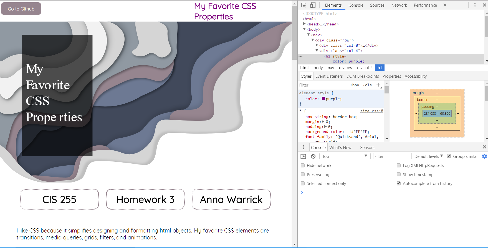

CIS 255
Homework 3
Anna Warrick
I like CSS because it simplifies designing and formatting html objects. My favorite CSS elements are transitions, media queries, grids, filters, and animations.
Transitions
The transition element is fun for making content responsive and dynamic.
Transitions are great for temporarily changing the css of an element to emphaize its content.
Transitions avoid being distracting by only running when an event is triggered.
Media Queries
Media queries are useful for ensuring a good user experience across various screen sizes and browsers. I used media queries on the transition above to ensure that the text in the circle divs could be read clearly on a phone screen. I also used a media query on the grid below to ensure that only one photograph is shown per row on smaller screens.
Grids and Filters

I really like the grid element because of its built in flexibility and responsiveness. If you re-size the window, the images change rows and sizes without a lot of extra code. Filters are useful for temporarily modifying photos to fit a specific color scheme without impacting the original image (photos courtesy of the royalty-free image site Pexels.com).
Animations
Animations are fun because unlike transitions, they can run continually without any user prompting. I also like that I can specify multiple frames within a single animation block. The example above has 3 frames: purple on the left, grey in the center, and blue on the right.
Dev Tools Example
(I have two titles because I tried to get the header image title to float over the header image, but had trouble getting it to look right, so I put the title in the SVG image instead and created a new one in the top bar to change to purple).